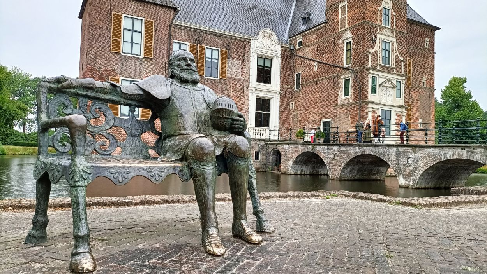
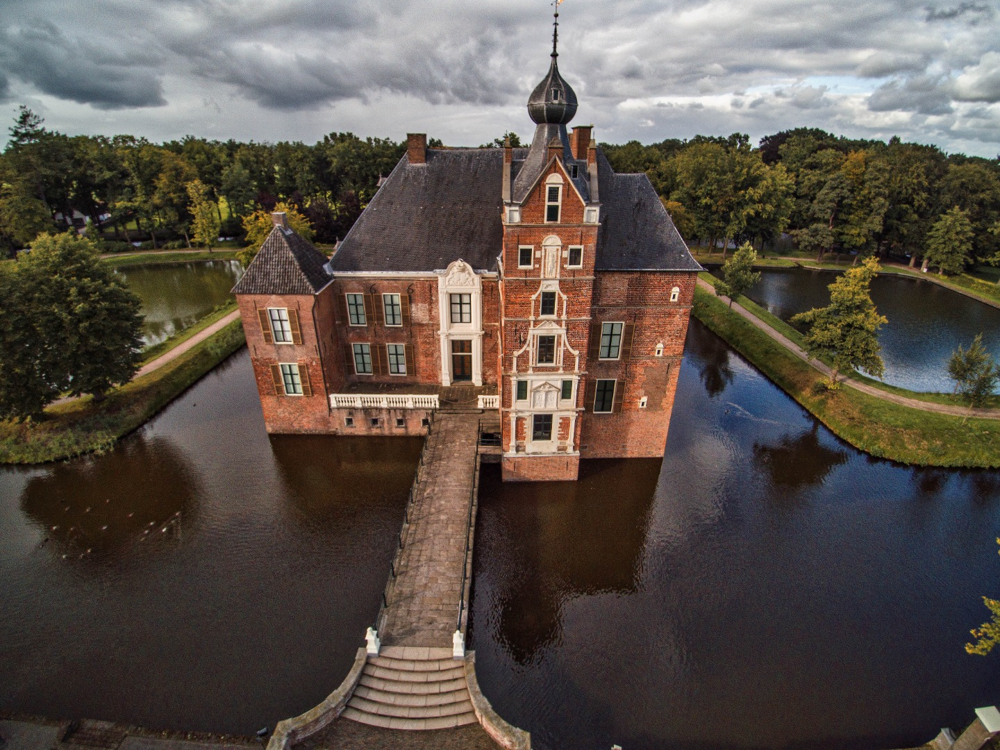
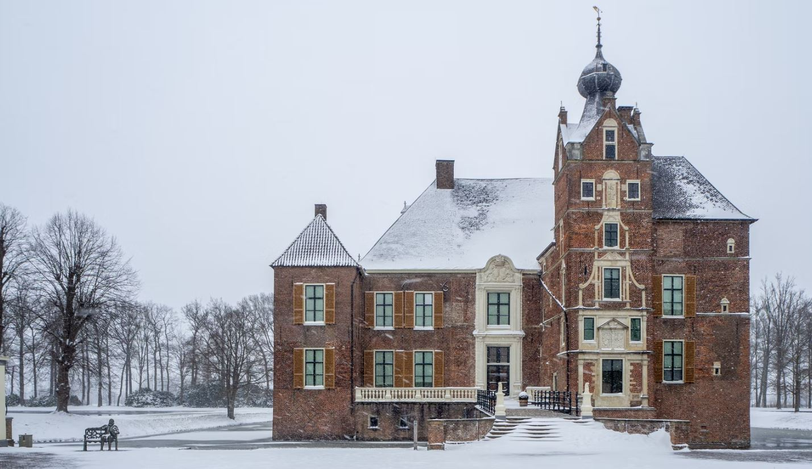

Kasteel de Cannenburch
Home
Galerij
Info

Standbeeld Maarten van Rossum

Kasteel van boven

Kasteel tijdens sneeuw
Uw browser ondersteund het audio formaat niet
Frans Nieuwenhuis - Cannenburgher kloksien